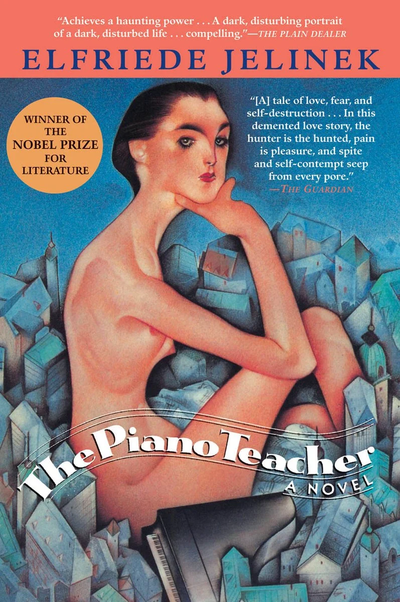
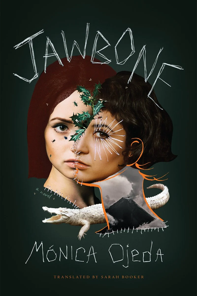
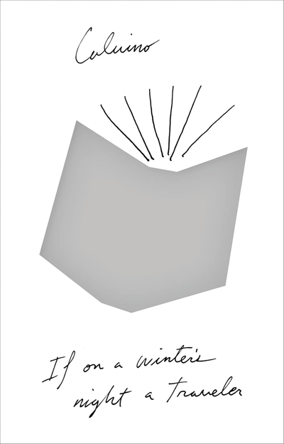

❃ NEXT MEETING: SEPTEMBER 10TH, 7PM, DISCUSSING THE PIANO TEACHER BY ELFRIEDE JELINEK. BE THERE OR BE SQUARE!
❃ NEXT MEETING: SEPTEMBER 10TH, 7PM, DISCUSSING THE PIANO TEACHER BY ELFRIEDE JELINEK. BE THERE OR BE SQUARE!
❃ NEXT MEETING: SEPTEMBER 10TH, 7PM, DISCUSSING THE PIANO TEACHER BY ELFRIEDE JELINEK. BE THERE OR BE SQUARE!
❃ NEXT MEETING: SEPTEMBER 10TH, 7PM, DISCUSSING THE PIANO TEACHER BY ELFRIEDE JELINEK. BE THERE OR BE SQUARE!
❃ NEXT MEETING: SEPTEMBER 10TH, 7PM, DISCUSSING THE PIANO TEACHER BY ELFRIEDE JELINEK. BE THERE OR BE SQUARE!

Sept. 10th, 7pm
The Piano Teacher
Elfriede Jelinek (Author)
Joachim Neugroschel (Translator)
Erika Kohut, piano teacher at the prestigious Vienna Conservatory, is a quiet woman devoted to Bach, Beethoven, and her domineering mother. Her life consists of desperate boredom, neurotic possessiveness, and hopeless dreams of a concert career whose hour has long passed. Enter Walter Klemmer--a handsome, arrogant man out to conquer Erika's affections. Suddenly the dangerous passions roiling under her subdued exterior explode in a release of sexual perversity and long-buried violence.

Oct. 8th, 7pm
Jawbone
Mónica Ojeda (Author)
Sarah Booker (Translator)
Fernanda and Annelise are so close they are practically sisters: a double image, inseparable. When Fernanda, Annelise, and their friends from the Delta Bilingual Academy convene after school, Annelise leads them in thrilling but increasingly dangerous rituals to a rhinestoned, Dior-scented, drag-queen god of her own invention. Even more perilous is the secret Annelise and Fernanda share, rooted in a dare in which violence meets love. Meanwhile, their literature teacher Miss Clara, who is obsessed with imitating her dead mother, struggles to preserve her deteriorating sanity.
Nov. 12th, 7pm
The Most Secret Memory of Men
Mohamed Mbougar Sarr (Author)
Lara Vergnaud (Translator)
In 2018, Diégane Latyr Faye, a young Senegalese writer in Paris, discovers a legendary book from the 1930s. No one knows what became of its author, once hailed as the “Black Rimbaud,” after the book caused a scandal. Enthralled by this mystery, Diégane decides to search for T.C. Elimane, going down a path that will force him to confront the great tragedies of history, from colonialism to the Holocaust. Alongside his investigation, Diégane becomes part of a group of young African writers in Paris. Together they talk, drink, make love, philosophize about the role of exile in artistic creation.

Dec. 10th, 7pm
If on a winter's night a traveler
Italo Calvino (Author)
William Weaver (Translator)
Based on a witty analogy between the reader’s desire to finish the story and the lover’s desire to consummate his or her passion, IF ON A WINTER’S NIGHT A TRAVELER is the tale of two bemused readers whose attempts to reach the end of the same book—IF ON A WINTER’S NIGHT A TRAVELER, by Italo Calvino, of course—are constantly and comically frustrated. In between chasing missing chapters of the book, the hapless readers tangle with an international conspiracy, a rogue translator, an elusive novelist, a disintegrating publishing house, and several oppressive governments.